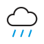
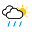
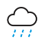
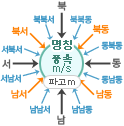

한때 비 또는 눈
한때 눈 또는 비
• 한국 기상청에서 사용하는 날씨 아이콘(날씨기호)의 의미를 설명하는 도표입니다. [출처 : 한국기상청 날씨기호 설명]
• 날씨 아이콘 저작물은 "공공누리" 출처표시-상업적이용금지-변경금지 조건에 따라 이용할 수 있습니다.

풍향 표시 방법과
바다 부이의 표시 내용
바다 부이의 표시 내용
한국 기상청 날씨 아이콘
| 아이콘 | 설명 | 아이콘 | 설명 |
| 맑음 | 맑음 (밤) | ||
| 구름조금 (낮) | 구름조금 (밤) | ||
| 구름많음 (낮) | 구름많음 (밤) | ||
| 흐림 | 소나기 | ||
|  | 비 |  | 가끔 비, 한때 비 |
| 눈 | 가끔 눈, 한때 눈 | ||
| 비 또는 눈 | 가끔 비 또는 눈, 한때 비 또는 눈 |
||
| 눈 또는 비 | 가끔 눈 또는 비, 한때 눈 또는 비 |
||
| 낙뢰 |  | 빗방울 | |
| 연무 | 눈날림 | ||
| 안개 | 박무 (엷은 안개) | ||
| 황사 |
• 한국 기상청에서 사용하는 날씨 아이콘(날씨기호)의 의미를 설명하는 도표입니다. [출처 : 한국기상청 날씨기호 설명] • 날씨 아이콘 저작물은 "공공누리" 출처표시-상업적이용금지-변경금지 조건에 따라 이용할 수 있습니다. |
||
|  풍향 표시 방법과 바다 부이의 표시 내용 |
|||
강수 아이콘 구분 안내
| 구분 | 지속적 강수 | 일시적 강수 | ||
| 비 | 흐리고 비 | 구름 많고 비 구름 많고 가끔(한때) 비 흐리고 가끔(한때) 비 |
||
| 눈 | 흐리고 눈 | 구름 많고 눈 구름 많고 가끔(한때) 눈 흐리고 가끔(한때) 눈 |
||
| 비 또는 눈 | 흐리고 비 또는 눈 | 구름 많고 비 또는 눈 구름 많고 가끔(한때) 비 또는 눈 흐리고 가끔(한때) 비 또는 눈 |
||
| 눈 또는 비 | 흐리고 눈 또는 비 | 구름 많고 눈 또는 비 구름 많고 가끔(한때) 눈 또는 비 흐리고 가끔(한때) 눈 또는 비 |
||